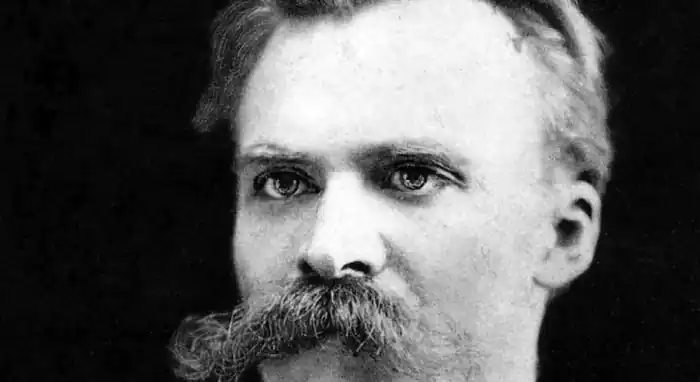
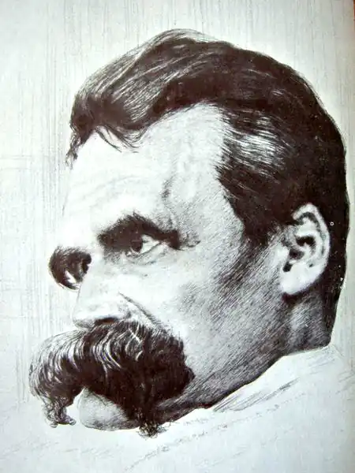

(15.10.1844 — 25.08.1900)
Фрідріх Вільгельм Ніцше є в чому виправдовуватися, а може бути, навіть і каятися. Ім'я цього філософа для людей, вихованих на гуманістичних ідеалах, звучить одіозно. Теорія надлюдини, взята на озброєння ідеологи нацизму. Його висловлювання на кшталт "слабкого штовхни" або "бог помер". Уява малює сильного, самовпевненого людини, одержимого ідеєю величі німецького духу…
Народився Ніцше, в 1844 році і по батьківській лінії походив з польських дворян. Навчався філології в Боннському та Лейпцігському університетах. Потім отримав ступінь доктора наук і переїхав у Швейцарію, щоб, як він сам зізнавався, уникнути військової повинності. Приблизно в цей час зав'язується дружба й листування між Ніцше і Ріхардом Вагнером. Вагнер, до якого звернена одна з перших значних робіт Ніцше "Народження трагедії з духу музики", через п'ятнадцять років стане чи не головним опонентом філософа. До речі, стосунки з Вагнером і його колом зайвий раз доводять непримиренність Ніцше до адептів німецької винятковості: "Бідний Вагнер! Куди він потрапив! — Ласкаво б ще він потрапив до свиней! А то до німців…". У цьому висловлюванні Ніцше звучить не стільки неприязнь до рідного народу, скільки роздратування войовничим націоналізмом, яким захоплювався уславлений композитор. Ось узагальнений портрет Ніцше, відтворений зі слів друзів: "У нього була звичка тихо говорити, обережна, задумлива хода, спокійні риси обличчя… У звичайному житті він відрізнявся ввічливістю, майже жіночою м'якістю, постійної рівністю характеру. Йому подобалися вишукані манери у зверненні, і при першій зустрічі він вражав своєю церемонностью. І це "надлюдина", упевнений у власній вищості і нехтує слабких? Частково мають рацію ті професійні філософи, які знизують плечима при словосполученні "філософія Ніцше". Він не зовсім філософ у прийнятному для них сенсі слова. Тоді хто ж? Кажуть: філолог, поет, философствующий есеїст… Сам стиль, сама музика його текстів разюче відрізняються від наукової манери викладу. Його підхід найменше розрахований на обсективное сприйняття життя. Логіки в ньому замало, зате скільки пристрасті! У віці 35 років Ніцше серйозно захворює. "До 1876 році моє здоров'я погіршилося… Болісна і невідступна головний біль виснажувала всі мої сили. З роками вона наростала до піку хронічної хворобливості, так що рік налічував тоді для мене до 200 нестерпних днів… Зрілість мого духа припадає саме на цей страшний час". Серед його останніх робіт — "Так говорив Заратустра", "По той бік добра і зла", "Сутінки ідолів"… Напружені і повні відчаю, ці книги відображають суперечності, разрывавшие душу хворого філософа, виражають внутрішню боротьбу, в якій Ніцше програв сам собі. У 1900 році, на рубежі століть, він помер в італійській лікарні для психічнохворих у Турині. Далі сталося щось дивне. Самий аристократичний з мислителів, індивідуаліст відразу ж після смерті знайшов масову популярність, був растаскан на цитати, перетворений в ідола. Напередодні Першої світової ім'ям Ніцше виправдовувалися територіальні і політичні домагання Німеччини. Багато захоплювалися приналежністю німців до розряду "сверхчеловеков", про яких сам Ніцше, немов передбачаючи такий поворот подій, говорив, що "вони погано пахнуть". Втім, про те, що дійсно говорив Ніцше, намагалися не згадувати. Англійський політик лорд Крамер заявляв: "Одна з причин, що змусили нас взяти участь у війні, полягає в тому, що ми повинні захистити світ, прогрес і культуру, щоб вони не впали жертвою філософії Ніцше". Покійний філософ опинився між двох вогнів. Тексти Ніцше в обов'язковому порядку стали вивчати в гімназіях Німеччини. В рюкзаках німецьких юнаків, які відправлялися на фронты Першої світової, поряд з Біблією і "Фаустом" лежав ницшевский "Заратустра". Втім, цей "Заратустра", як з'ясовується, був не зовсім ницшевским… Перед війною архів Ніцше перейшов у ведення його сестри Елізабет Ф"рстер-Ніцше. Згодом вона написала багатотомну "Життя Фрідріха Ніцше", де представила себе единомышленницей і чи не єдиною ученицею покійного брата. "Люди на зразок моєї сестри, — писав філософ, — неминуче виявляються непримиренними супротивниками мого образу думок і моєї філософії". Він ніби передбачав, що сестра опублікує його тексти, перекрутивши їх до невпізнання. Так на світ з'явився двійник філософа, який не залишив свого первообразу шансів на виправдання. Ніцшеанство, що отримало масове поширення, було б правильніше називати ф"рстер-ницшеанством… Одна з головних концепцій Ніцше виглядає приблизно так. Духовне повноліття кожної людини зазначено кризовим переживанням свого я. Людина усвідомлює, що його формування відбувалося досі без його відома і участі. З ранніх років він піддавався впливу традиційних виховання, освіти, моралі, релігії і науки, але з якогось моменту почав відчувати це опікунство як тягар і особисту несвободу. Зростає бажання стати тим, хто він є, скинути маску, нав'язану йому суспільством. Я, вращавшееся навколо об'єктивних цінностей, хоче сам стати центром і об'єктивною цінністю. Вдається це не кожному. Двадцяте століття показав, що в підсумку Я не тільки не створило собі нових світів, але і зірвалося з колишньою орбіти… Знамените "штовхни слабкого" звучить майже як інструкція для шибайголів. Але про який "слабкому" тут йдеться? У роботі "По той бік добра і зла" Ніцше писав: "В людині твар і творець сполучені воєдино: в людині є… глина, бруд, безглуздя, хаос; але є і творець, творець… — чи розумієте ви це протиріччя?" Ницшеанский надлюдина, таким чином, — той, хто в процесі внутрішньої боротьби зумів знищити в собі створене початок і розвинути творче. Ніцше, по суті справи, категорично заперечував агресію. Людина, за його твердженням, може нападати лише на самого себе. Звинувачення Ніцше з боку поборників гуманізму зазвичай зводяться до трьох пунктів: пангерманізм, антисемітизм, славянофобия. При уважному вивченні його текстів жодне з цих звинувачень критики не витримує. Ось кілька фактів і вибраних навмання цитат. 1. "Походження німецького духу — з розстроєного кишечника". "Куди б не простягалася Німеччина, вона псує культуру". 2. "Було б, може бути, корисно і справедливо видалити з країни антисемітських крикунів". Розрив з Вагнером був багато в чому викликаний антисемітизмом знаменитого композитора. 3. "Обдарованість слов'ян здавалася мені більш високою, ніж обдарованість німців". Можливо, тут позначилося слов'янське походження самого Ніцше. Але вже у всякому разі "недолюдей" Ніцше слов'ян не вважав, як це йому намагався приписати Гітлер. У Радянському Союзі Ніцше довгий час був під забороною. Сьогодні оригінальні тексти книг добре відомі і переведені на російську мову. Але дивує і насторожує те, що поряд з справжнім Ніцше продовжує виходити і фальсифікований. Я власними очима бачив книжку Ніцше під редакцією його сестри на одному прилавку з російським перекладом "Майн Кампф". Значить, страшний двійник філософа на цей раз знадобився комусь в Росії.